Apple
- iPhone 15 Pro
- iPhone 16 Pro
- iPhone 17 Pro
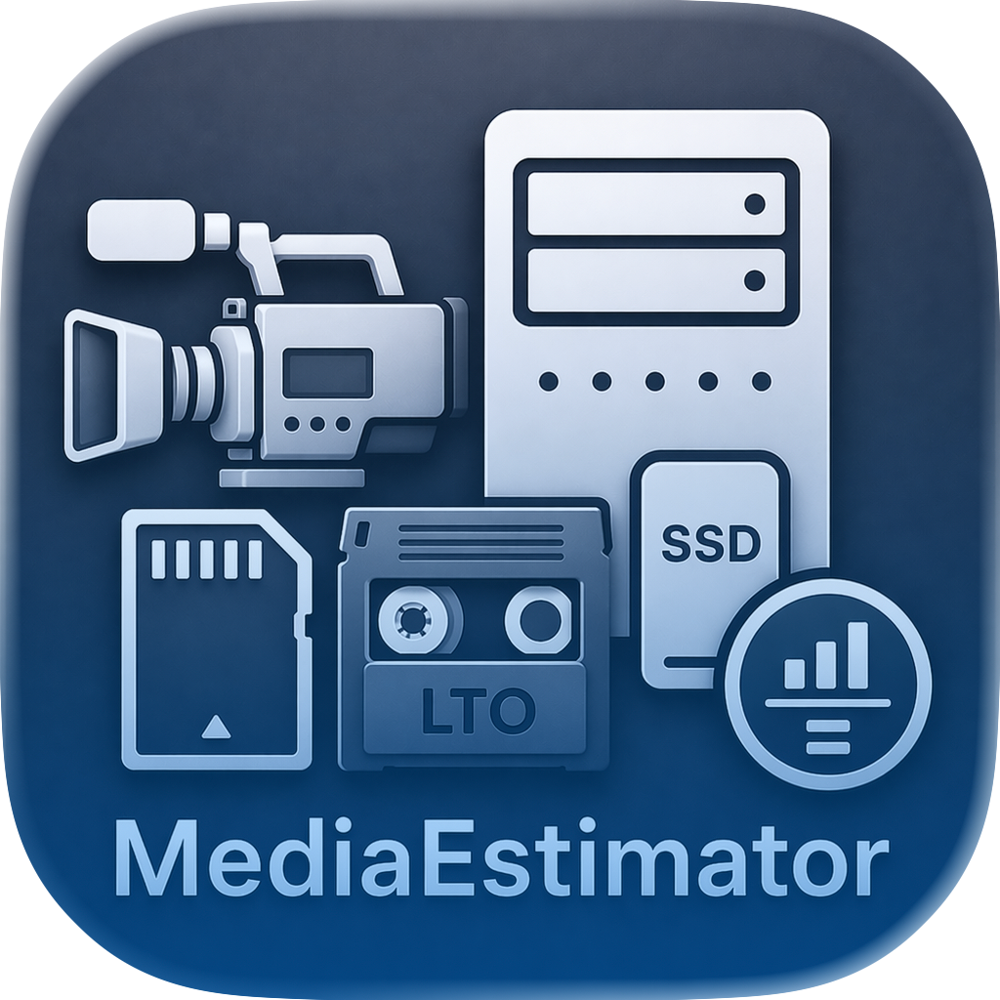
Media EstimatorProduction media planning for macOS
Media Estimator turns schedules, camera formats, audio sources, shuttle workflows, proxy codecs, and LTO choices into practical storage and labor estimates for production and post.
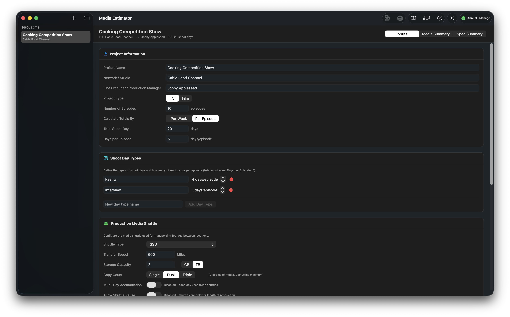
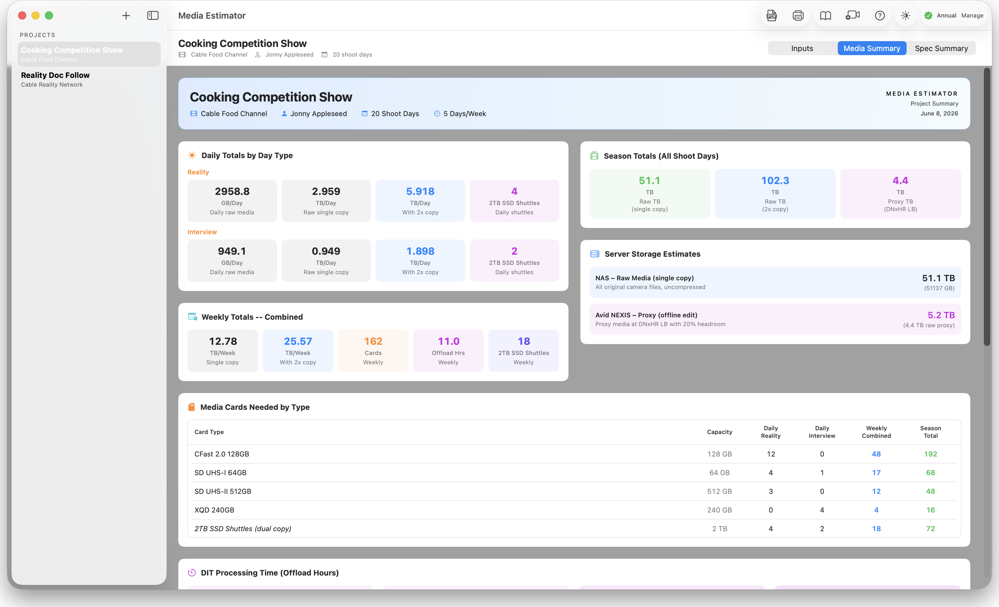
Inputs
Create TV or film projects, define shoot day types, configure media shuttle capacity and speed, then add camera and audio rows for each day type. Estimates update as assumptions change.
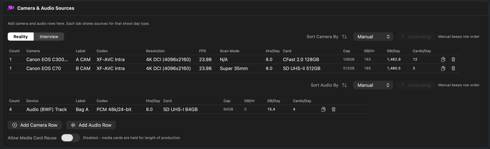
Camera database
Below are the cameras currently supported by Media Estimator. The list is updated regularly as new camera and codec requests are added.
Request a new cameraMedia Summary
The Media Summary converts project assumptions into daily, period, and project totals that are easy to review with production, post, and the DIT team.
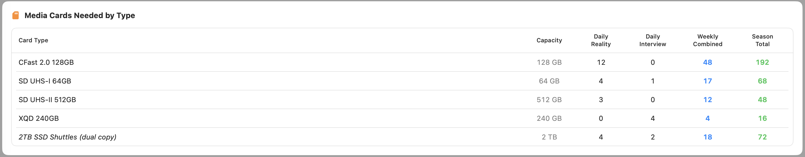
Group card needs by format and capacity, with daily, period, and full project totals.
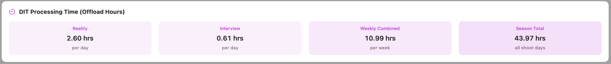
Plan offload windows from media volume, card speed, shuttle speed, and copy count.
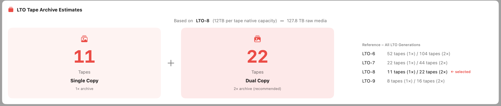
Estimate archive tape counts for single-copy and dual-copy delivery workflows.
Inside the app
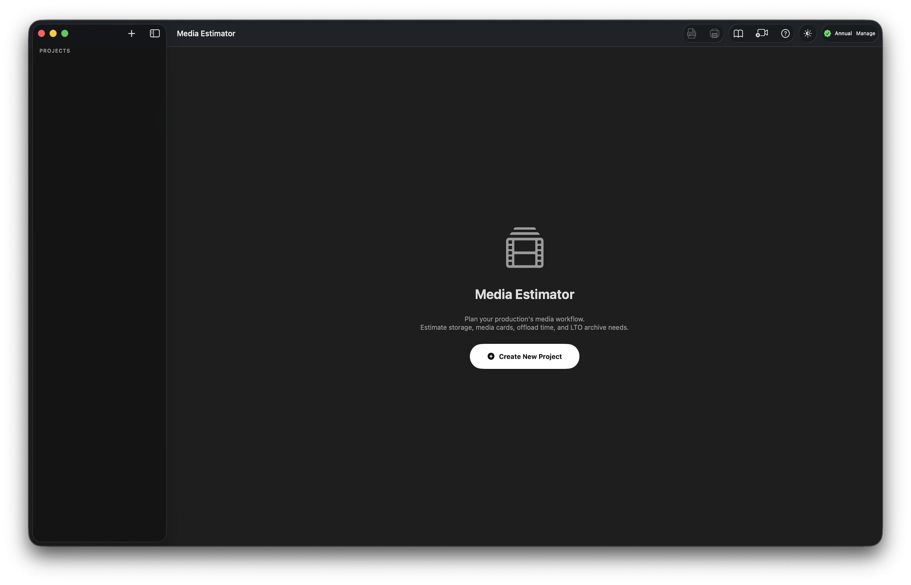
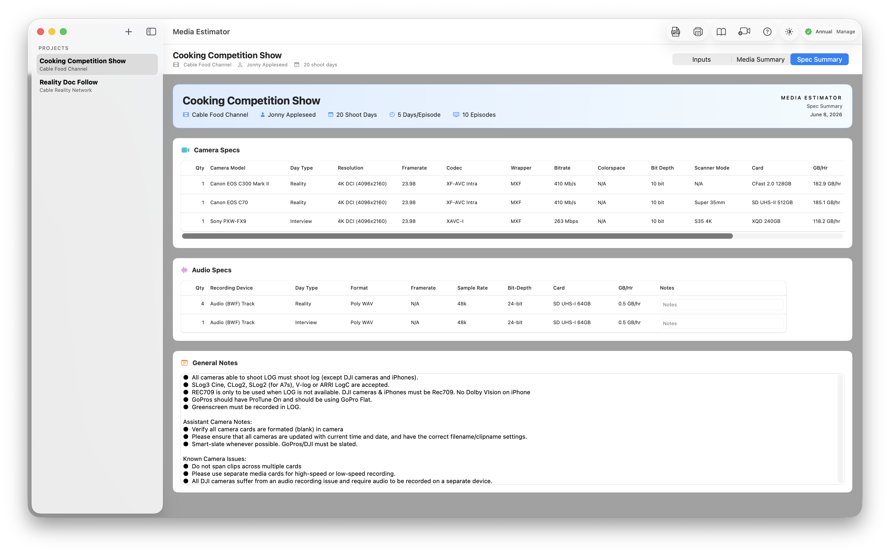
Spec Summary
Review technical details by row, capture notes for workflow exceptions, and create clean print or PDF outputs for meetings, decks, and production documentation.
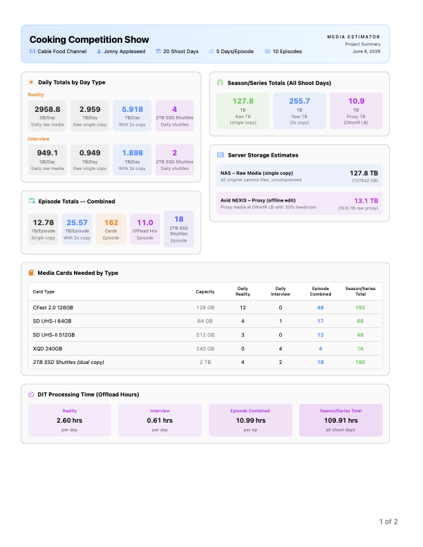
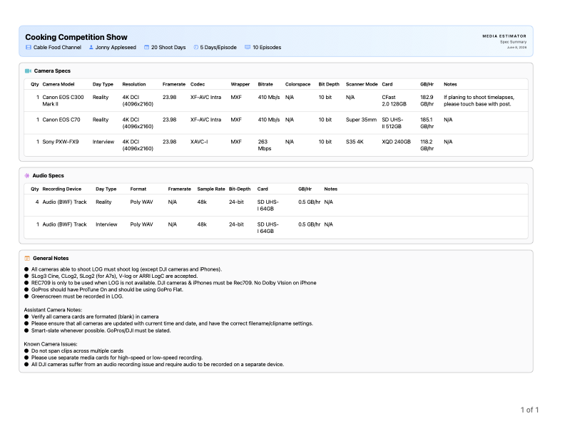
Free and Pro
One active project, up to two camera or audio rows, and full access to view inputs, Media Summary, and Spec Summary.
Unlimited projects, unlimited rows, printing, and PDF export for Media Summary and Spec Summary deliverables.
Privacy
Media Estimator does not collect personal information, usage analytics, diagnostics, tracking data, cookies, or payment details.